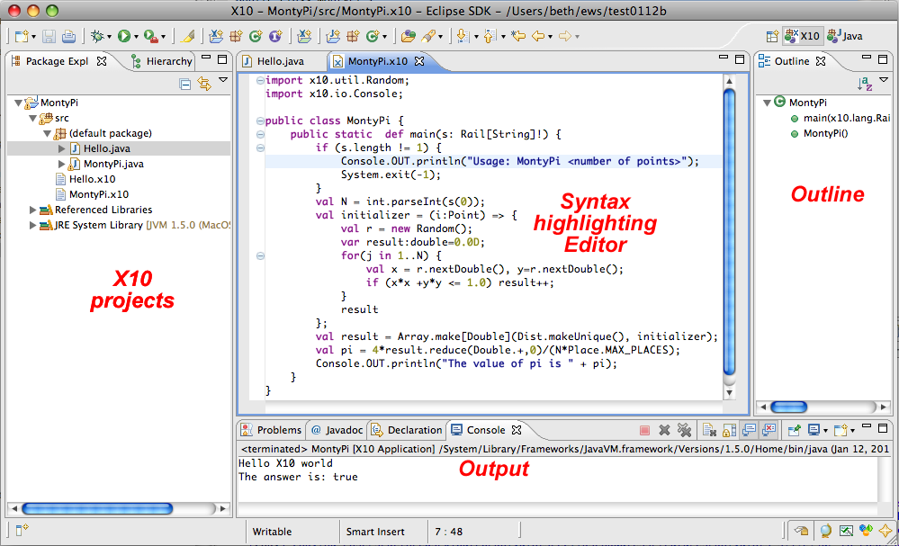

In the X10 Perspective, you will see the X10 projects in the Package Explorer, the editor, the Outline view, a Console to show output, etc., and other views. When you set up how you run your program, you will see the Launch Dialog where you specify how you want to run the program (see the "Running" section for details). 

X10 projects can be created using either the Java back-end or the C++ back-end.
See X10 projects - Java back-end vs. C++ back-end.Or proceed directly to..
Creating a project with the X10 Java back-end is a good introduction to using X10.
Creating a project with the C++ backend covers how to create projects that are compiled and run with C++, including remote projects where the target machine is not the local machine (a different machine from where Eclipse is running).